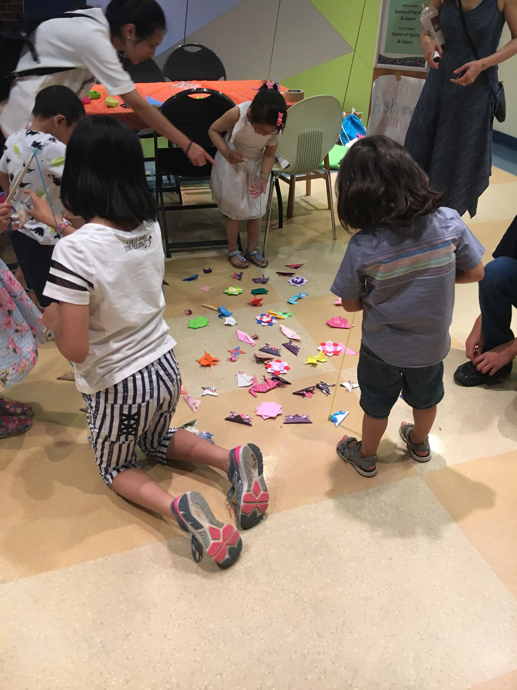
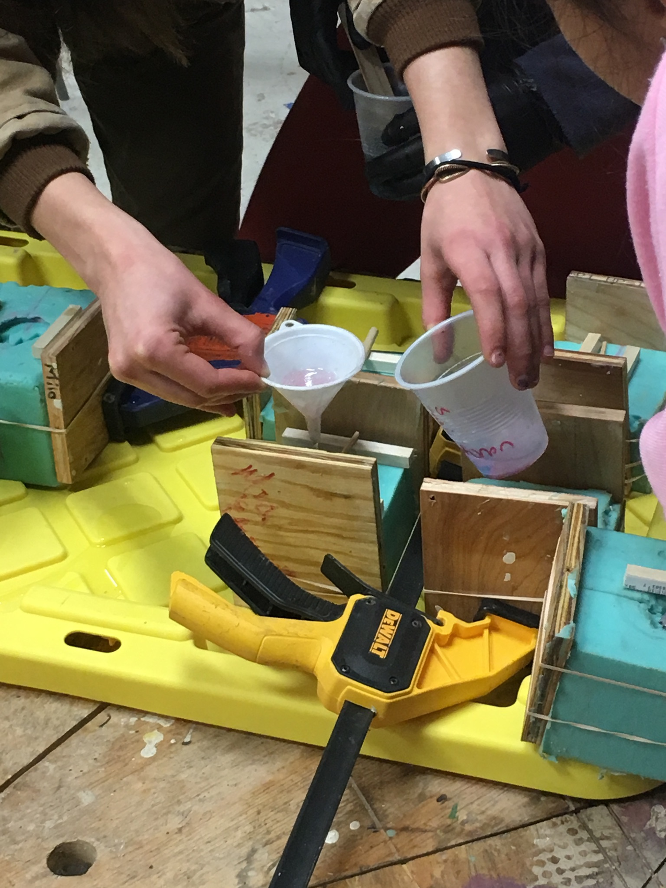
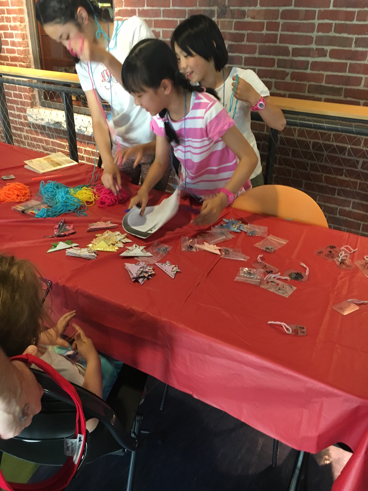
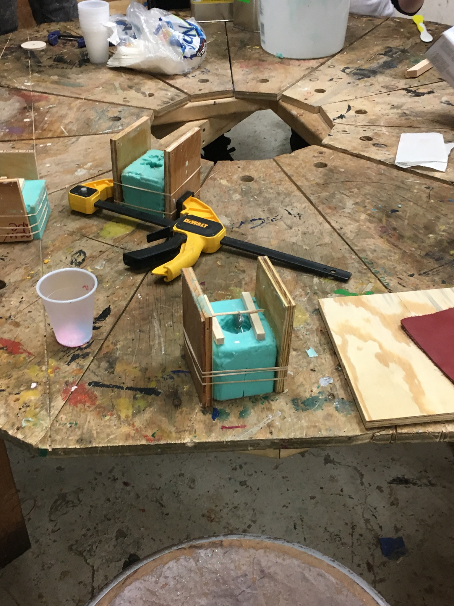
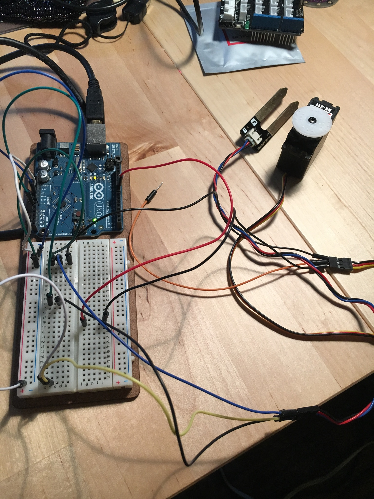
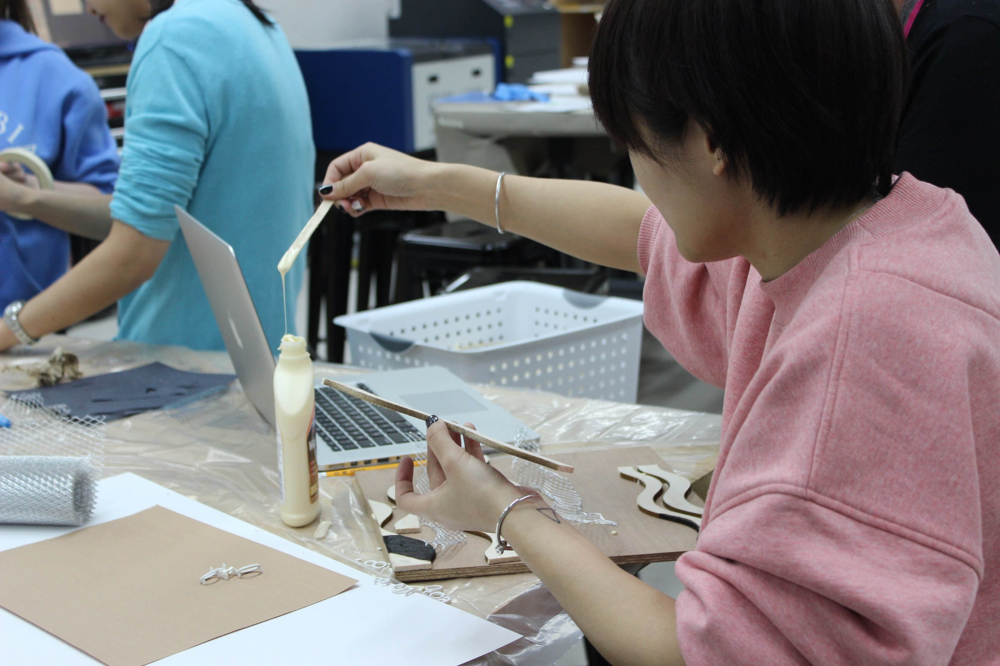
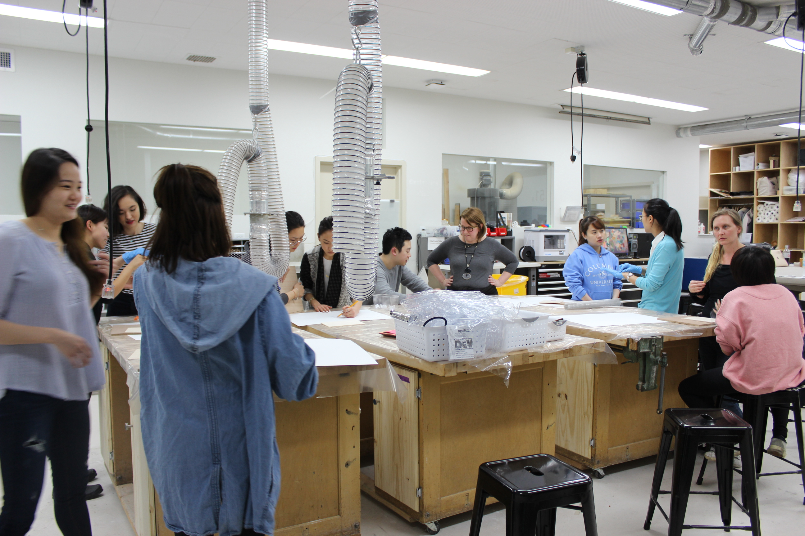
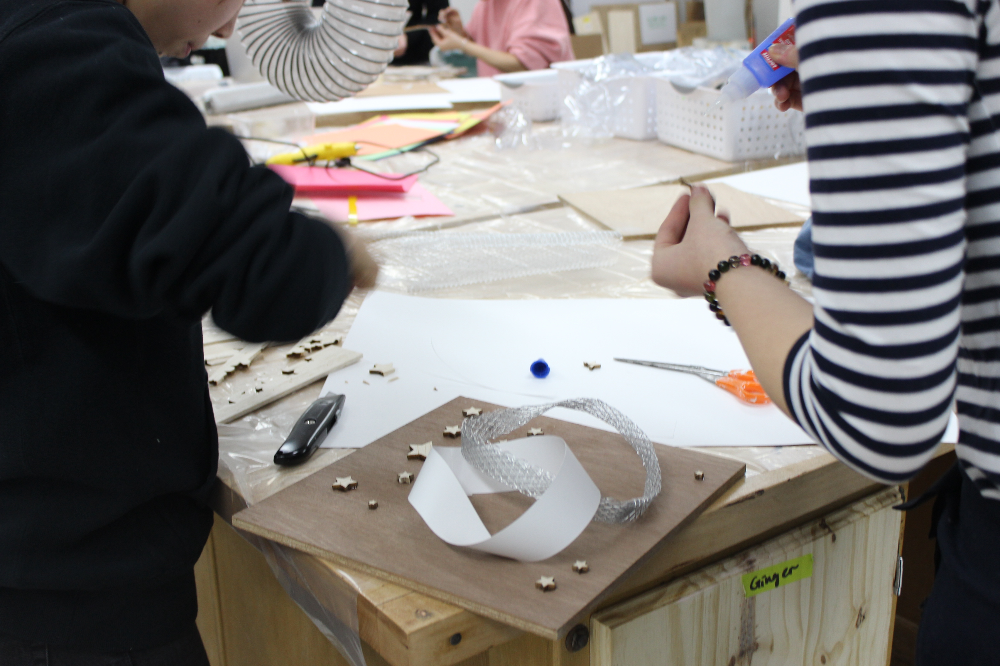
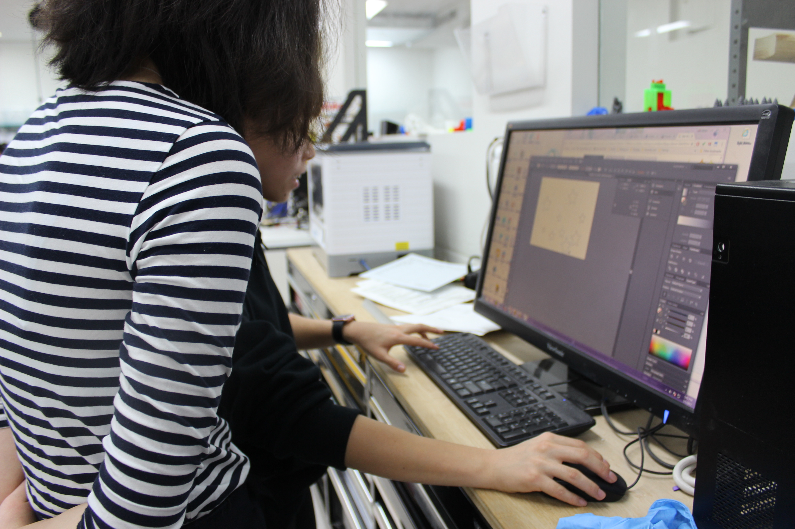

MakerSpace Research
Program Profiles
Projects
Participants
Schools
Interactives
Role Exchange in Collaborations
Simulations
Role Exchanges in Group Work
Photos
Models of Systems
Participate
Inside the Making Process








